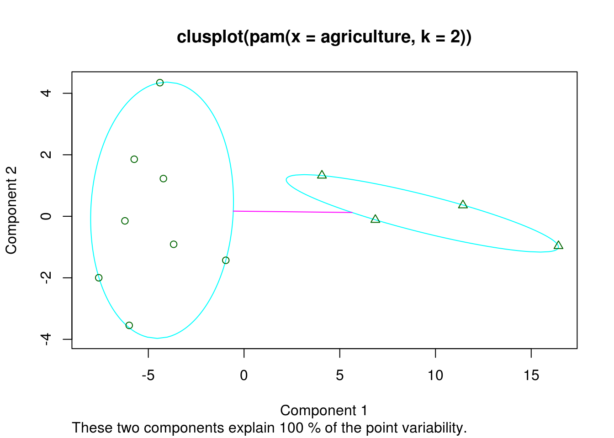
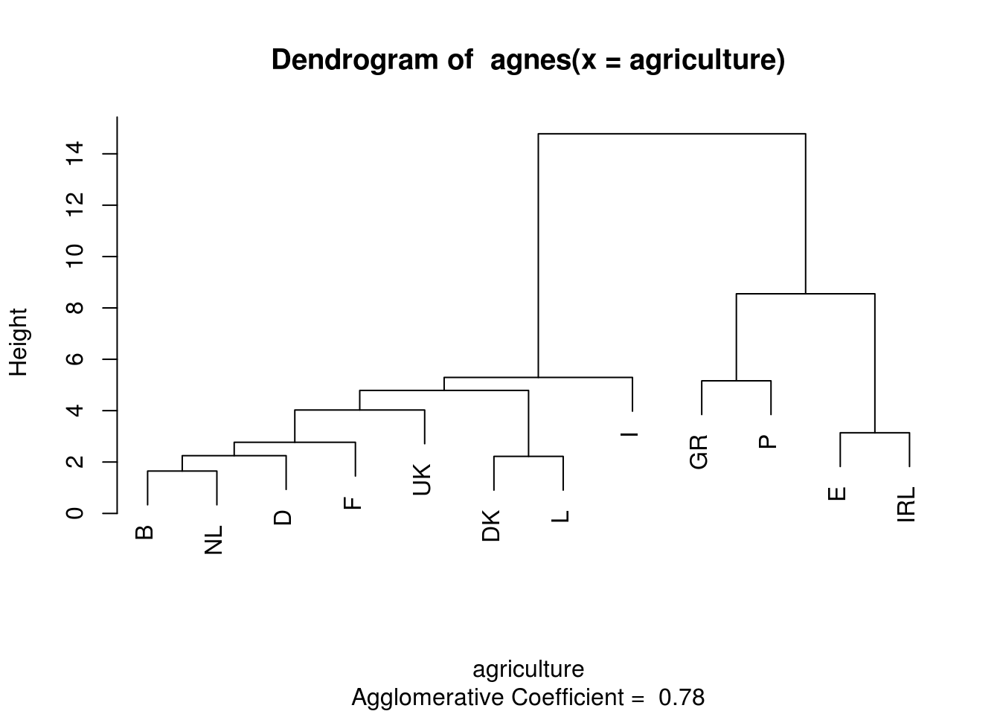
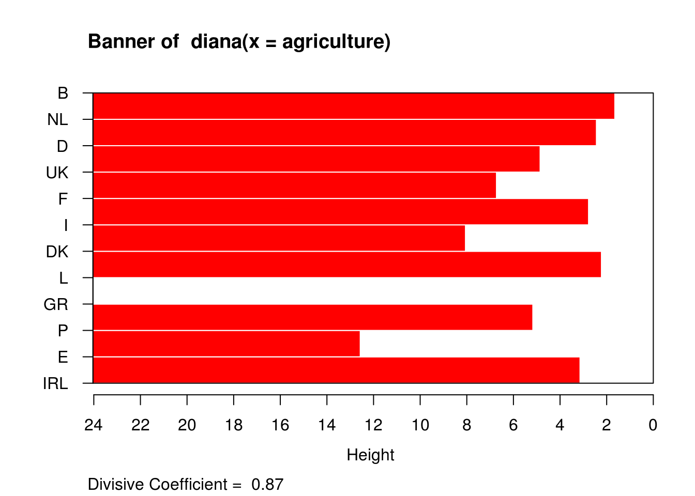

Capítulo 3 Análise de Agrupamentos
Nesta seção serão utilizados as seguinte bibliotecas do R.
libs <- c('cluster', 'psych')
sapply(libs, require, character.only = TRUE)## Loading required package: cluster## Loading required package: psych## cluster psych
## TRUE TRUE3.1 Exemplo: Força de trabalho agrícola na UE (1993)
Estes conjunto registra os dados da produção per capita e o percentual da população que trabalha na agricultura em cada país da UE em 1993.
data(agriculture)
## Calcula matriz de dissimilaridade usando distância euclidiana
## e sem padronização das variáveis
daisy(agriculture, metric = "euclidean", stand = FALSE)## Dissimilarities :
## B DK D GR E F IRL
## DK 5.408327
## D 2.061553 3.405877
## GR 22.339651 22.570113 22.661200
## E 9.818350 11.182576 10.394710 12.567418
## F 3.448188 3.512834 2.657066 20.100995 8.060397
## IRL 12.747549 13.306014 13.080138 9.604166 3.140064 10.564563
## I 5.803447 5.470832 5.423099 17.383325 5.727128 2.773085 7.920859
## L 4.275512 2.220360 2.300000 24.035391 12.121056 4.060788 14.569145
## NL 1.649242 5.096077 2.435159 20.752349 8.280097 2.202272 11.150785
## P 17.236299 17.864490 17.664088 5.162364 7.430343 15.164432 4.601087
## UK 2.828427 8.052950 4.850773 21.485344 8.984431 5.303772 12.103718
## I L NL P
## DK
## D
## GR
## E
## F
## IRL
## I
## L 6.660330
## NL 4.204759 4.669047
## P 12.515990 19.168985 15.670673
## UK 6.723095 7.102112 3.124100 16.323296
##
## Metric : euclidean
## Number of objects : 12## Usa método de particionamento pelo meióide
## Partitioning Around Medoids (PAM)
plot(pam(agriculture, 2), which.plots = 1)
## Gráfico dendograma usando método aglomeração mais próximo
## agnes
plot(agnes(agriculture), which.plots = 2)
## Plot dissimilaridade usando método divisivo
## diana
plot(diana(agriculture), which.plots = 1)
3.2 Processo de Agrupamento
Um agrupamento pode ser construído de duas formas:
- hierarquia: funções agnes, diana, mona e hclust;
- particionamento: funções pam, clara, fanny e kmeans
3.3 Métodos de Agrupamento
Um agrupamento pode gerar os grupos utilizando algum dos métodos a seguir (mais comuns):
- média: average ou UPGMA
- simple: single
- completa: complete
- Ward: ward
- média ponderada: weighted ou WPGMA
3.4 Distâncias para cálculo de agrupamento {##AAdist}
Para se calcular a distância entre os componentes, pode-se utilizar as funções a seguir (mais comuns):
- euclidiana: euclidean, raiz da soma dos quadrados das diferenças
- mahalanobis
- Manhattan: manhattan, soma das diferenças média absoluta
- Maximum:
- Canberra
- Binary
- Minkowski